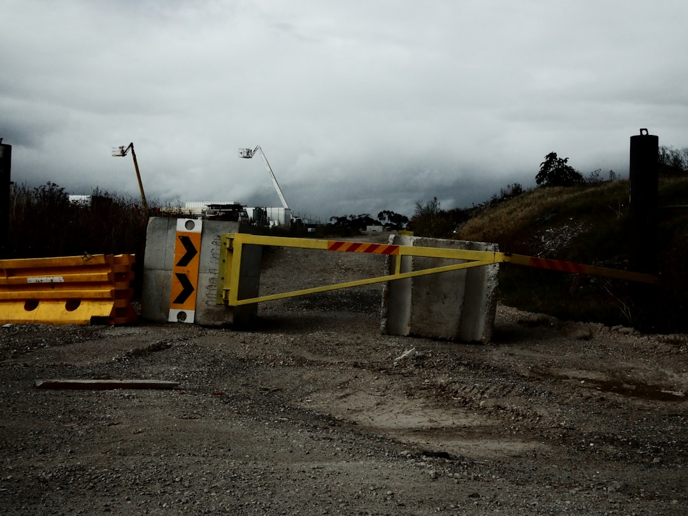

For homeowners comparing retaining wall contractors geelong options, the practical question is how clearly the site, wall load, drainage path and approval pathway can be described before quotes are requested.
Retaining Wall Contractors Geelong Explained
Retaining Wall Geelong frames retaining wall decisions around the site record first: retained levels, water movement, upper-ground loads and construction access. That is useful because a wall is not just a visible face. It is also a foundation, a drainage path, a load case and a boundary condition.
A practical brief should describe what the wall supports, where water currently travels, how machines or materials can reach the work area, and whether the wall is new, ageing or visibly moving. Photographs should show both ends, the upper and lower ground, nearby fences, driveways, buildings, trees, outlets and the route from the street. For a failed wall, a long view that shows lean or bulging is more useful than a close image of one cracked board.
The source page also separates wall systems by site fit. Concrete sleepers, treated timber, reinforced masonry, segmental blocks, stone and gabions can all be valid in the right setting, but each changes footprint, maintenance, foundation, delivery and drainage requirements.
Who this applies to
This guide is for Geelong property owners preparing an early retaining wall brief, especially where the wall touches a boundary, supports a driveway, holds upper garden levels, or replaces an older timber or masonry structure. It also applies when a homeowner wants comparable written quotes rather than a rough material preference.
- Owners replacing a leaning or bulging wall should record whether symptoms have changed, not only the current appearance.
- Owners planning a new boundary wall should ask how access, neighbouring gardens and spoil removal affect the method.
- Owners in compact established lots should treat access width, buried services and protection of existing concrete as scope items.
- Owners near low-lying ground or drainage corridors should make surface falls and lawful discharge part of the first conversation.
For a shorter companion overview, the sibling retaining wall Geelong guide keeps the same topic in a broader local format.
Quote inputs that change the conversation
A useful quote request includes approximate wall height, retained levels, wall length, visible defects, nearby loads, access width, available photographs and any plans. The goal is not to design the wall by email. It is to remove vague assumptions before a contractor decides whether the next step is a site assessment, repair discussion, drainage review or full replacement scope.
The source guide recommends comparing complete scope, not just the visible wall type. A quote that mentions structure but leaves drainage, approvals, access and exclusions unclear is hard to compare with another quote. Ask each contractor to describe the proposed system, what the foundation depends on, how water is handled, what demolition or spoil handling is included, and which approval checks remain the owner's responsibility.
Material choice should follow those inputs. Treated timber may suit low garden walls where design life, drainage, soil contact and later maintenance are understood. Reinforced masonry may suit compact structural retention. Segmental systems may need coordination with foundations, drainage and geogrid where specified. Stone and gabion systems need room for footprint, batter, material delivery and drainage behaviour.
Drainage and approval checks
Drainage is a design question, not a decorative extra. The supplied site text says proper retaining wall drainage may include filtered aggregate, geofabric, subsoil pipe, surface falls and a lawful outlet. That sequence matters because water movement can influence wall performance and the practicality of a repair.
Approval checks should be kept separate. The source page says Building and Plumbing Commission guidance requires a building permit at 1 metre or more and for walls on or near boundaries where adjoining property could be damaged. It also says planning approval is separate from a building permit, with planning controls, overlays, easements and title restrictions sitting outside the building-permit pathway.
The action for owners is straightforward: ask which permit or planning questions are triggered by the actual site, then confirm them with the appropriate property-specific professional, such as a registered building surveyor for the building permit pathway.
Local conditions worth documenting
Local detail is most useful when it explains a site constraint. In Geelong West, the source page points to compact established lots, older boundaries and busy access routes, so demolition, spoil handling and neighbouring garden protection can shape the method. In South Geelong, the relationship between older walls, paths, service location and drainage outlets needs early checks.
Newcomb and Bell Park are described through established homes, later infill, side access limits, underground services and ageing boundary walls. Whittington is noted for low-lying residential ground and drainage corridors where surface falls, lawful discharge and older timber or masonry wall condition can be decisive. Moolap is treated as a mixed residential, rural and former industrial setting where soil conditions, buried services and water movement need property-specific investigation.
Those examples should not be used as suburb stereotypes. They are prompts for better records: access, drainage, services, nearby loads, wall condition and what the contractor can physically build without guessing.
- Measure the wall. Record approximate height, length, retained levels and what sits above or behind the wall.
- Trace water. Note surface falls, visible outlets, wet areas and any existing drainage components.
- Photograph context. Capture both ends, upper and lower ground, access route, nearby structures, fences, trees and visible defects.
- Ask for a complete scope. Compare quotes across structure, drainage, access, approvals, exclusions and repair assumptions.
| Choice | Useful when | Ask before choosing |
|---|---|---|
| Repair discussion | An existing wall is leaning, bulging or showing visible defects | What caused the movement and has it changed over time? |
| Replacement scope | The wall system, drainage or foundation is no longer fit for the site | What demolition, drainage, access and exclusions are included? |
| Material comparison | Several wall systems could suit the setting | How do height, loads, drainage, footprint and maintenance affect the choice? |
| Approval check | The wall is high, near a boundary, or affected by property controls | Which building permit, planning, easement or title questions need confirmation? |
This guide covers early retaining wall scoping for Geelong owners comparing site records, wall systems, drainage, approvals and quote detail.